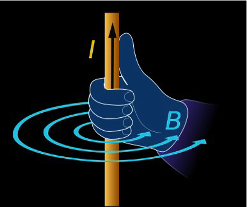
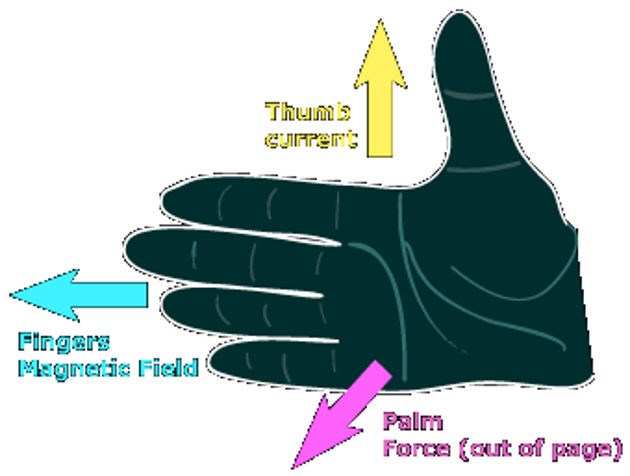
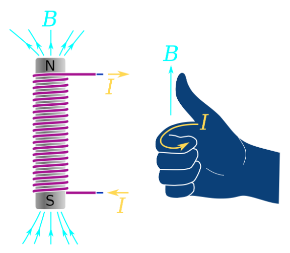

In previous lessons, we discussed how to find the magnitude of the magnetic force applied on a charged particle and on a current-carrying wire. In this lesson we are going to learn how to find the direction of said magnetic force and the direction of the magnetic field induced by a current-carrying wire and a solenoid.
First, to find the direction of a magnetic field induced by a current-carrying wire. You point your thumb in the direction of the current and curl the rest of your fingers; the rest of your fingers indicate the direction of the magnetic field as shown below.
Now, to find the direction of force applied on a charge or current-carrying wire in a magnetic field. You point your thumb in the direction of the current/velocity vector, and while keeping your hand flat, pointing the rest of your fingers in the direction of the magnetic field, the force is perpendicular to your palm. A figure is shown below.
Please note that this only applies to a current or a positive charge. In the case of a negative charge, the force will be in the opposite direction.
Finally, for a solenoid, you can find the direction of the induced magnetic field at its center by putting your fingers in the direction of the coils, and the thumb will point in the magnetic field's direction. As shown in the figure below.
Written by Mubarak Aouda